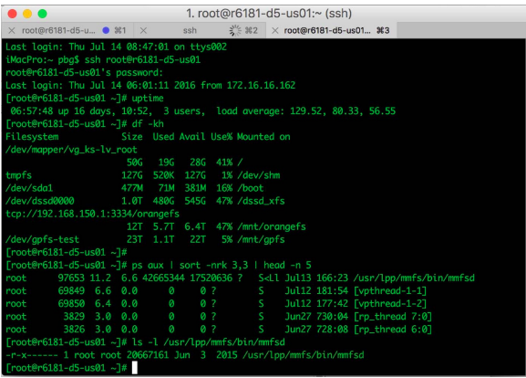

Software en Sistemas operativos
El software en sistemas operativos se refiere a los programas y conjunto de instrucciones que permiten la interacción entre el usuario, las aplicaciones y el hardware de un sistema de cómputo. A continuación, se proporciona una descripción general de cómo funciona el software en sistemas operativos:
Cómo funciona el software en sistemas operativos
- Kernel del Sistema Operativo:
- El núcleo (kernel) es la parte central del sistema operativo. Se encarga de gestionar los recursos del hardware, proporcionar servicios a las aplicaciones y facilitar la comunicación entre el software y el hardware.
- Gestión de Procesos:
- El sistema operativo controla la ejecución de procesos y asigna recursos como la CPU y la memoria a cada proceso.
- Implementa algoritmos de planificación de procesos para decidir qué proceso se ejecuta en cada momento.
- Gestión de Memoria:
- Controla la asignación y liberación de memoria para los procesos en ejecución.
- Utiliza técnicas como la paginación y la segmentación para optimizar el uso de la memoria.
- Sistema de Archivos:
- Proporciona un sistema de archivos que organiza y gestiona los datos almacenados en dispositivos de almacenamiento como discos duros y unidades flash.
- Permite la creación, lectura, escritura y eliminación de archivos.
- Interfaz de Usuario:
- Ofrece una interfaz de usuario que permite la interacción entre el usuario y el sistema operativo.
- Puede ser una interfaz de línea de comandos (CLI) o una interfaz gráfica de usuario (GUI).
Usuarios y la Interfaz del Sistema Operativo
- Intérprete de Comandos:

Son programas especiales que se ejecutan cuando los procesos se inician. Permiten la entrada directa de comandos. Cuando un sistema operativo tiene múltiples intérpretes de comandos para escoger, se denominan shells.
Ejemplos de shells:
- C shells
- Bourne-Again shell
- Korn shell
- Interfaz Gráfica de Usuario (GUI):

Interfaz amigable caracterizada por la metáfora de escritorio.
- Sistema de ventanas, ratón, teclado y monitor.
- Iconos: representan archivos, programas, acciones, etc.
- Movimientos y uso de los botones del ratón sobre los objetos de la interfaz provocan diversas acciones.
Muchos sistemas incluyen ahora interfaces CLI y GUI:
- Microsoft Windows: GUI con un shell de "comandos" CLI.
- Apple Mac OS X: "Aqua" con un núcleo UNIX y shells disponibles.
- Unix y Linux: CLI con interfaces GUI opcionales (CDE, KDE, GNOME).
Son programas especiales que se ejecutan cuando los procesos se inician. Permiten la entrada directa de comandos. Cuando un sistema operativo tiene múltiples intérpretes de comandos para escoger, se denominan shells.
Ejemplos de shells:
- C shells
- Bourne-Again shell
- Korn shell
Interfaz amigable caracterizada por la metáfora de escritorio.
- Sistema de ventanas, ratón, teclado y monitor.
- Iconos: representan archivos, programas, acciones, etc.
- Movimientos y uso de los botones del ratón sobre los objetos de la interfaz provocan diversas acciones.
Muchos sistemas incluyen ahora interfaces CLI y GUI:
- Microsoft Windows: GUI con un shell de "comandos" CLI.
- Apple Mac OS X: "Aqua" con un núcleo UNIX y shells disponibles.
- Unix y Linux: CLI con interfaces GUI opcionales (CDE, KDE, GNOME).